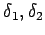
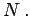
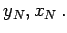
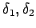
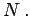
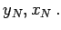

Bei diesem Rechenverfahren werden zwei Hilfspunkte P und Q verwendet, die je auf einem Hilfskreis durch A,C,P bzw. B,C,Q sowie beide auf einer Geraden durch den Neupunkt N liegen.
Gegeben:  Gemessen:  in  Gesucht: 
Gemessen:  in  Gesucht: 
Die Kreismittelpunkte H1 bzw. H2 sind die Schnittpunkte der Mittelsenkrechten von bzw. mit den Verbindungslinien PC bzw. Die in N gemessenen Winkel erscheinen wieder in P bzw. Q (Peripheriewinkel).
Lösung:
Gefährlicher Kreis: Bei der Punktauswahl ist dafür zu sorgen, daß die vier betrachteten Punkte nicht auf einem Kreis liegen, weil es dann keine Lösung gibt; man spricht vom gefährlichen Kreis. In dem Maße, in dem die Punkte in die Nähe eines gefährlichen Kreises zu liegen kommen, nimmt die Genauigkeit des Verfahrens ab.